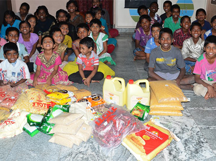
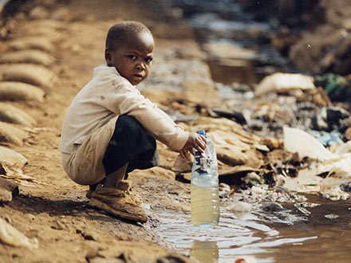
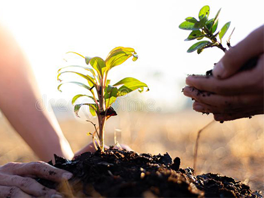
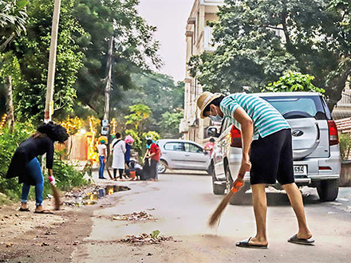
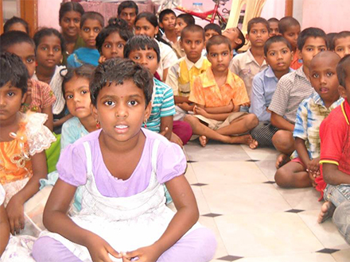
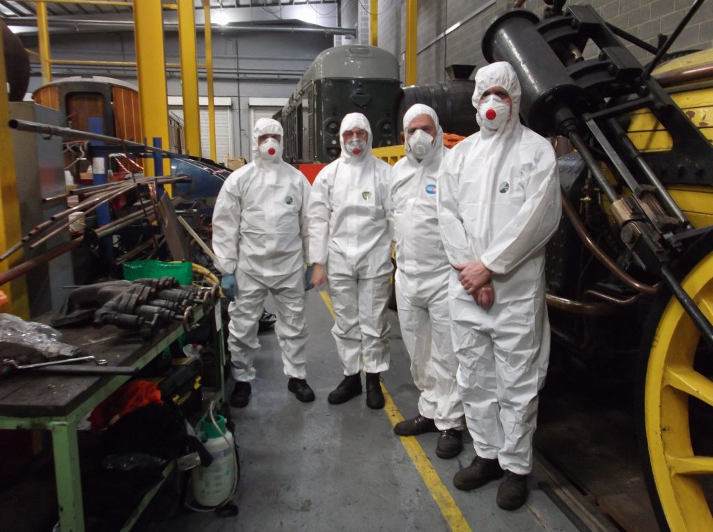
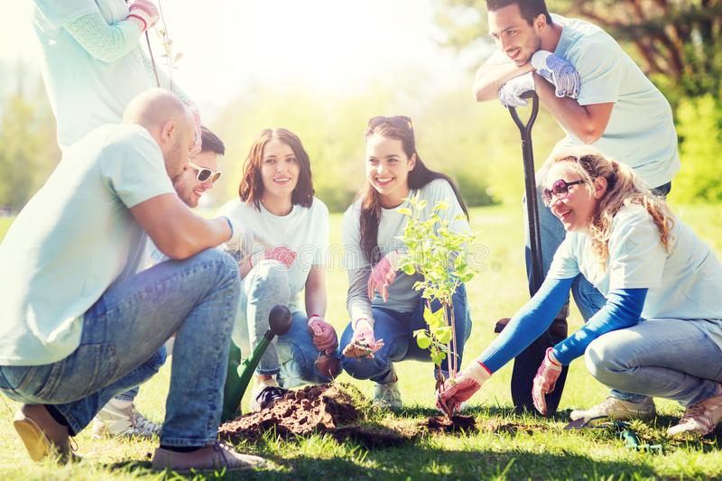

“I don't really care if people forget me. My legacy wasn't about me. It was about everything I could do for another. When that sinks in...well you try a little harder. You dream a little broader. Your heart stretches a little farther and you find that you can't go back to the same place and make it fit. You become a person of ideas and seek out your own kind. And then it happens: One day you discover that staying the same is scary and changing has become your new home.”
"Making a donation is the ultimate sign of solidarity, Actions speak louder than words."

HELPING THE NEEDY
Helping the poor with nutritious food and basic essential needs. Ensuring the parental care for homeless and hopeless people.

CARE FOR STREET CHILD
Ensuring street children to join school. Ensuring them proper education, food, shelter, clothes, books and basic essential needs.

PLANTING TREE’S
Planting trees and ensuring their care. Gifting our volunteer’s and our new joiner’s a sapling and welcome them.

CLEANING THE AREAS
We clean the dirtiest places which are uncomfortable for those nearby people and ensure proper dust-bin’s and sign boards.

FUND’S TO ORPHANAGE
Donating our funds to orphanages to ensure them nutritious food and proper shelter. providing children basic essential needs.

FOR COVID PATIENTS
Donating for covid patients to ensure them nutritious food, oxygen cylinders and proper facilities.
MISSION-VISION
"We have two hand's one to help ourself the second to help other's"

MISSION
Helping hands, a non-profit organization in India is to empower underprivileged children, oldage people through relevant education, innovative healthcare and market-focused livelihood programmes.
VISION
Work as a catalyst in bringing sustainable change in the lives of underprivileged children, youth and women, with a life-cycle approach of development. Enable the civil society across the world to engage proactively in the change process through the philosophy of civic driven change. Adopt highest standards of governance to emerge as a leading knowledge and technology driven, innovative and scalable international development organization.